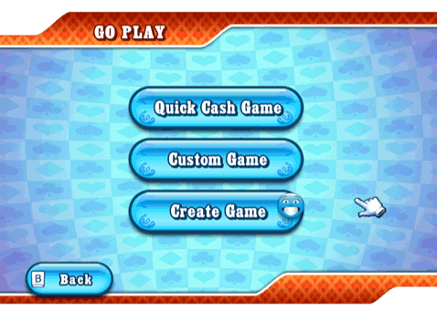

20 |
Go Play (Spelen) |
 |
 Kies een ‘Quick Cash Game’ (Snelle cash-game), ontmoet mensen uit de hele wereld via ‘Custom Game’ (Spel aanpassen) of creëer een nieuw spel via ‘Create Game’ (Spel creëren). Quick Cash game (Snelle cash-game) Je wordt automatisch gekoppeld aan mensen en aan een cash-game tafel geplaatst met grote/kleine blinds al naar gelang het bedrag waarmee jij kunt spelen, op basis van je stack. Als je wilt meespelen in een cash-game dat al is begonnen, wordt het hoogste bedrag dat jij kunt inzetten automatisch geselecteerd als jouw minimale inlegbedrag. Custom Game (Spel aanpassen) Ga naar het menu ‘Game Details’ (Spelgegevens). Hier kun je de zoekcriteria instellen voor je gewenste tafel en word je automatisch gekoppeld aan tegenspelers uit de hele wereld. Alleen bij cash-game: Afhankelijk van het aantal beschikbare cash-games, kun je meespelen in een spel dat reeds is begonnen of toegang krijgen tot een lobby voordat het spel van start is gegaan. Create Game (Spel creëren) In dit menu kun je een ‘Worldwide’ (Wereldwijd) spel creëren, een besloten ‘Friends Game’ (Spel met vrienden), toegang krijgen tot je ‘Friend Roster’ (Vriendenoverzicht) of ‘Add/remove Friends’ (Vrienden toevoegen/verwijderen). Create a Worldwide Game (Een wereldwijde game creëren) In een wereldwijde game kun je gekoppeld worden aan tegenspelers uit de hele wereld. Alle spelers mogen ‘Friends’ (Vrienden) uitnodigen. Alleen de host mag stoelen reserveren en het spel openen. Create a Friends Game (Een spel met vrienden creëren): Als je niet met vreemden wilt spelen, dan is dat prima. Hier kun je ervoor kiezen om een besloten spel te hosten waaraan alleen vrienden mogen deelnemen. |
 |
 |
 |